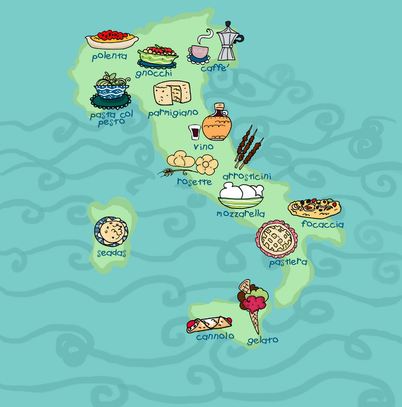
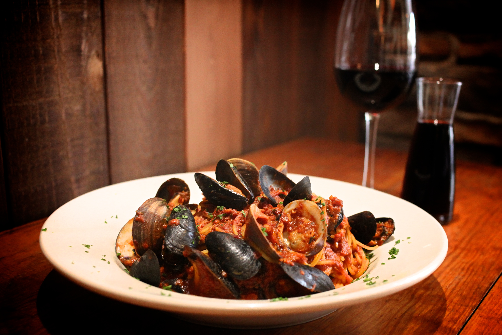

Italian Food and wine
In truth, food is one of the cornerstones of Italian culture and even if times are changing and life is more and more frenetic, Italians still find a great pleasure in sitting at a table, at home or at the restaurant, and share a good meal together: this is because to the people of Italy, Italian food and wine are part of their culture and, very often, also of their own family history. Each Italian will tell you about their family way to cook a specific dish, using recipes often passed on through generations. If this is somehow common also in the rest of the world, in Italy it truly has a deeper significance. This, however, doesn't mean that Italians don't enjoy discovering new foods or new ways of preparing familiar dishes, maybe matching them with a different wine: this is, once again, a sign of how much Italian food and wine mean to the people of Italy, how important they are in their everday life.We can truly recommend one page which can give you many information about Italian Food. Just click here and enjoy :)